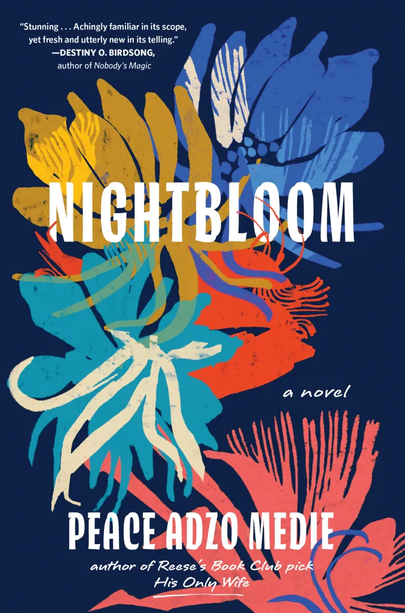

You See
Me
Nightbloom

A novel about two cousins, Akorfa and Selasi, raised together in Ghana and separated by class, ambition and time. When Akorfa leaves for the United States and Selasi stays behind, a secret from their childhood resurfaces and forces both women to reckon with the choices that shaped their friendship.